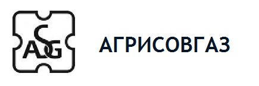

ПВХ-окно способно прослужить до 20 лет без серьёзных поломок, а современным моделям прогнозируют срок годности до 45 лет. Даже старые технологии позволяли…
Мансарда – это жилое помещение под крышей, чаще всего второй этаж загородного дома. Чердачное помещение имеет покатую крышу и всего две прямые стены,…
Образование влаги на окне – это одна из самых частых неприятностей, на которые жалуются владельцы ПВХ-профилей. Конденсат может стать причиной порчи…
Профильная система Ags
В состав серии профилей AGS входят следующие системы: AGS 50E, AGS 50, AGS 68E, AGS 68, AGS 150. Алюминиевые профильные системы изготавливаются из алюминиевых сплавов. Системы, из которых изготавливаются двери, окна, витражи, зимние сады и фасады зданий.

У каждого заказчика есть возможность выбрать любой цвет по шкале RAL. Изготовление алюминиевых профилей утверждено лабораторией по исследованиям строительных материалов.
В настоящее время компания выпускает следующие разновидности профильных систем:
- Система AGS500 предназначена специально для строительства фасадов зданий, а также для монтажа светопрозрачных конструкций. Отличительной чертой данных профильных систем является трёхуровневая система для вывода лишней влаги, исключающая возможность образования конденсата.
- AGS 150 СО. Алюминиевая профильная система, разработанная для применения в сооружении стеклянных витражей и фасадов.
- Алюминиевый профиль AGS68. Данная система относится к числу универсальных, потому что может быть использована при строительстве как жилых, так и промышленных зданий. В профиле находятся специальные вставки, которые создают преграды теплопотерям и промерзаниям в холодное время года.
- Система AGS78C. Алюминиевая система с терморазрывом, обеспечивающая максимально возможный коэффициент теплосбережения. Данный тип профиля применяется для изготовления оконных систем.
В настоящий момент компания также готова представить и такие профили: AGS 50E, AGS 150, AGS 75ТХ, AGS 68E, AGS50F. Каждая из данных разновидностей предназначена для производства того или иного вида светопрозрачных конструкций.